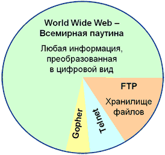

Благодаря использованию различных сетевых протоколов Интернет может обеспечить выполнение двух основных функций:
• быть средством общения между удаленными пользователями;
• быть средством доступа к общим информационным ресурсам, размещенным в Интернете.
Очевидно, что каждая из этих функций может быть реализована с помощью различных средств, что обеспечивает многообразие услуг, предоставляемых пользователям Интернета. Средства обеспечения определенных услуг для пользователей глобальной сети принято называть службами Интернета. При этом коммуникационные службы обеспечивают общение между удаленными пользователями, а информационные - дают возможность пользователям получить доступ к определенным информационным ресурсам, хранящимся в Интернете.
Среди последних служб лидирующее место по объему хранимой информации занимает служба WWW, поскольку данная служба наиболее удобна для работы пользователей и наиболее прогрессивна в техническом плане. На втором месте находится служба FTP, поскольку какие бы интерфейсы и удобства не разрабатывали для пользователя, информация все равно хранится в файлах, доступ к которым и обеспечивает эта служба. Службы Gopher и Telnet в настоящее время можно считать «отмирающими», так как новая информация уже почти не поступает на серверы этих служб и количество таких серверов и их аудитория практически не увеличивается.